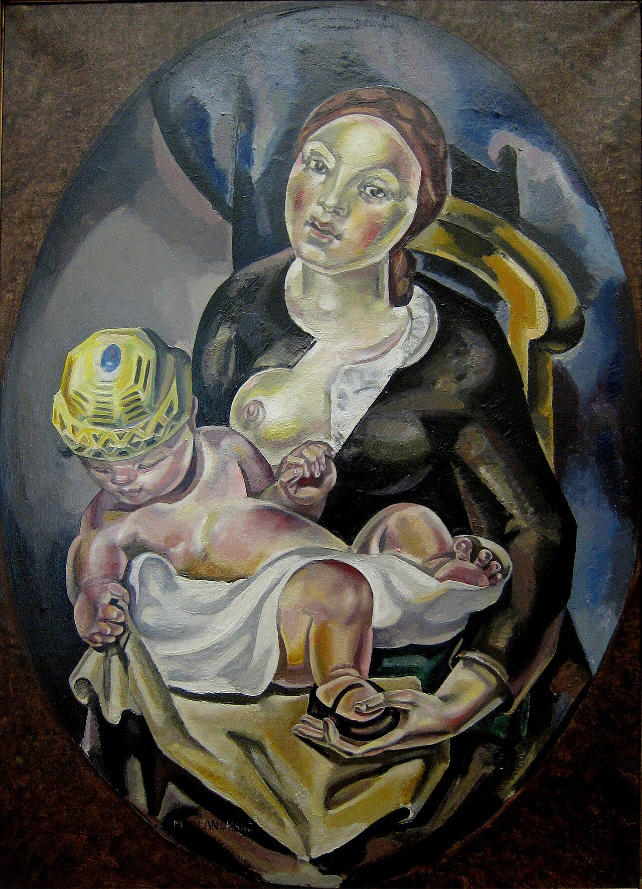

Pintores, escultores y músicos
Criterios: PC 5.2, PC 7.3
🤔 Pienso5 min
Qué hago aquí: Piensa un momento y contesta con lo que ya sabes. No pasa nada si no lo sabes: es para empezar.
Si tuvieras que pintar un paisaje de Cantabria, ¿cuál elegirías? ¿Qué colores usarías?
📖 Leo y aprendo15 min
Qué hago aquí: Lee despacio, mira los dibujos y los ejemplos, y quédate con la idea clave del final.
Los paisajes verdes, la niebla y el mar de Cantabria han inspirado a muchos artistas. Otros salieron fuera y llevaron el arte cántabro a las vanguardias de Europa.

Foto: Maria Blanchard · CC BY-SA 3.0 · Roubaix Maria Blanchard.JPG
escultor de Santillana del Mar; trabajaba la piedra
pintor de bodegones y del mar
violinista de Potes, siglo xix
gran director de orquesta, de Castro Urdiales
✏️ Hago25 min
Qué hago aquí: Haz las actividades en orden. Empieza siempre por las básicas.
Explica qué tienen en común Casimiro Sainz y Agustín Riancho y por qué su pintura es también un documento del paisaje de su época.
Explica qué es el cubismo y cómo se nota en una obra de María Blanchard. Compáralo con un paisaje realista.
Responde a la mirada de patrimonio: ¿qué intenta mostrar cada tipo de pintor, el que pinta el paisaje y la cubista?
Clasifica a los artistas de la ficha por disciplina y por siglo. ¿Qué disciplinas faltan y qué artista cántabro podrías añadir?
Busca un paisaje de Riancho o de Sainz e identifica el lugar. Compara cómo era entonces y cómo es hoy (con una foto actual): ¿qué ha cambiado y qué se mantiene?
María Blanchard tuvo que irse a París para desarrollar su arte. Explica qué obstáculos tenía una mujer artista con discapacidad a principios del siglo xx y por qué París era distinto.
Escucha una pieza de Jesús de Monasterio o una grabación dirigida por Ataúlfo Argenta. Describe la música (instrumentos, ritmo, sensación) y explica por qué la música también es patrimonio.
🚀 Amplío (si quieres saber más)
Qué hago aquí: ¿Has terminado? Lee la curiosidad o elige el reto. Es voluntario.
Investiga el Centro Botín: arquitecto, año de apertura, qué tipo de exposiciones hace y por qué su construcción junto a la bahía generó debate. Escribe tu opinión: ¿una obra moderna puede convertirse en patrimonio?
✅ Compruebo5 min
Qué hago aquí: Contesta sin mirar la ficha y marca cómo lo llevas.